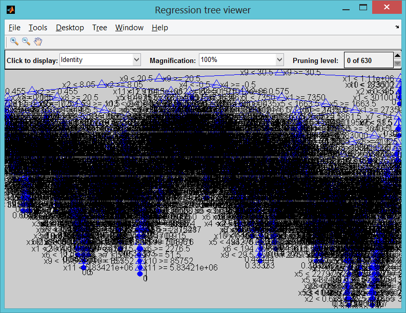
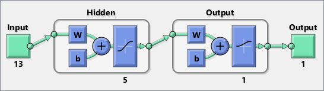
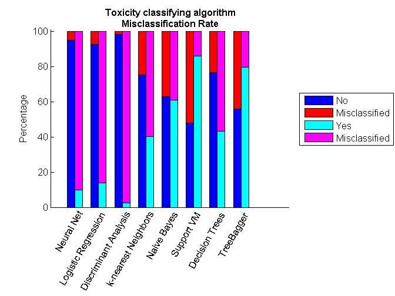
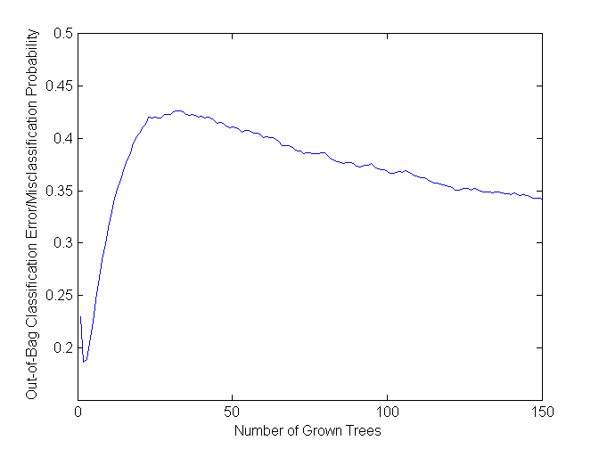
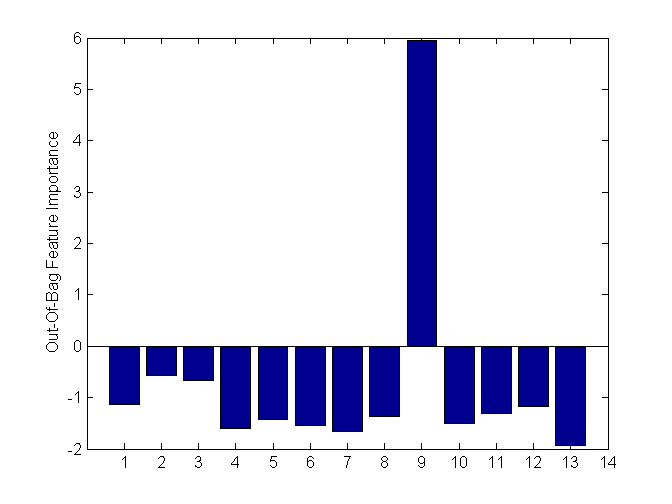

Machine Learning for links toxicity assessment
Machine learning techniques are often used for financial analysis and decision-making tasks such as accurate forecasting, classification of risk, estimating probabilities of default, and data mining. However, implementing and comparing different machine learning techniques to choose the best approach can be challenging. Machine learning is synonymous with Non-parametric modeling techniques. The term non-parametric is not meant to imply that such models completely lack parameters but that the number and nature of the parameters are flexible and determined from data.
Contents
- Loading data
- Data displaying
- Prepare the Data: Response and Predictors
- Cross Validation
- Tree performance on validating and training set
- Speed up Computations using Parallel Computing
- Neural Networks
- Other Machine Learning Techniques
- Generalized Linear Model - Logistic Regression
- Discriminant Analysis
- Classification Using Nearest Neighbors
- Naive Bayes Classification
- Support Vector Machines
- Decision Trees
- Ensemble Learning: TreeBagger
- Compare Results
- Simplify Model - Optional
- Estimating a Good Ensemble Size : learning curve
- Estimating Feature Importance
- Sequential Feature Selection
- TreeBagger with Reduced Feature Set
- Compare Results
- Shut Down Workers
- References
Loading data
load('penguin.mat');
Data displaying
disp(penguin(1:20,:));
Keyword KeywordVolume KeywordCpc KeywordCompetition
____________________ _____________ __________ __________________
'"assurance auto"' 1.1e+05 12.53 1
'"assurance auto"' 1.1e+05 12.53 1
'"assurance auto"' 1.1e+05 12.53 1
'"location voiture"' 2.46e+05 4.92 0.98
'"location voiture"' 2.46e+05 4.92 0.98
'"location voiture"' 2.46e+05 4.92 0.98
'"location voiture"' 2.46e+05 4.92 0.98
'"location voiture"' 2.46e+05 4.92 0.98
'"location voiture"' 2.46e+05 4.92 0.98
'"location voiture"' 2.46e+05 4.92 0.98
'"banque en ligne"' 33100 29.92 0.98
'"banque en ligne"' 33100 29.92 0.98
'"banque en ligne"' 33100 29.92 0.98
'"banque en ligne"' 33100 29.92 0.98
'"banque en ligne"' 33100 29.92 0.98
'"banque en ligne"' 33100 29.92 0.98
'"banque en ligne"' 33100 29.92 0.98
'"banque en ligne"' 33100 29.92 0.98
'"banque en ligne"' 33100 29.92 0.98
'poker' 60500 16.45 0.87
Site Pr Alexa
__________________________________________________ __ __________
'www.auto.amv.fr' 4 2.3413e+05
'assurance-auto.comprendrechoisir.com' 4 7123
'www.ganassurances.fr' 4 4.286e+05
'www.fr.lastminute.com' 6 3382
'www.driiveme.com' 4 4.6852e+05
'www.hibiscuslocation.com' 2 NaN
'www.e-leclerc.com' 5 13846
'www.jumbocar.com' 4 1.4696e+06
'location-voiture.voyages.carrefour.fr' 0 NaN
'europcar-guadeloupe.com' 5 3.4055e+06
'www.guidebanque.com' -1 8.346e+05
'www.banquesenlignecomparatif.fr' 2 1.5754e+06
'co.lm.xr.sa.zq.tb.zb.lt.si.ar.30.french.taggy.cz' -1 96644
'www.banque-en-ligne.info' 1 0
'www.ca-nmp.fr' 4 77289
'www.lefigaro.fr' 8 521
'www.cmb.fr' 5 19457
'www.barclays.fr' 4 1.3316e+05
'www.bnpparibas.net' 6 2422
'www.jeux.fr' 4 7625
RefPages RefDomains CitationFlow TrustFlow YesterdayPos
__________ __________ ____________ _________ ____________
11996 19 43 38 25
402 78 37 28 30
1.1316e+05 314 46 48 33
4.7597e+05 1894 44 42 19
1821 164 44 25 25
252 50 28 31 27
1.5921e+06 4444 49 55 29
2939 184 39 29 30
27683 6 29 22 34
38425 121 30 27 112
51734 54 44 34 8
25884 72 47 32 10
0 0 0 0 15
11 6 20 16 18
58530 330 43 45 19
5.705e+06 60623 60 66 30
3.0708e+05 719 46 49 32
23923 567 45 49 33
5.7689e+05 3198 46 39 115
75098 1086 50 57 15
TodayPos Change Change_abs ExactAnchorsRefDomains
________ ______ __________ ______________________
32 -7 7 2
38 -8 8 20
23 10 10 3
30 -11 11 3736
20 5 5 0
32 -5 5 68
NaN NaN 102 10114
17 13 13 8
25 9 9 0
21 91 91 0
NaN NaN 123 10
105 -95 95 10
NaN NaN 116 0
36 -18 18 3
24 -5 5 0
17 13 13 4.8837e+05
22 10 10 1141
28 5 5 1
8 107 107 5698
9 6 6 4
ExactAnchorsRefPages ContainingAnchorsRefDomains
____________________ ___________________________
127 4
58 64
683 9
4.7295e+05 3736
0 2
289 68
1.6805e+06 10114
33 29
0 0
0 7
37391 23
4094 31
0 0
7 3
0 16
6.1721e+06 4.8837e+05
3.7362e+05 1141
1 2
5.7992e+05 5698
9 23
ContainingAnchorsRefPages
_________________________
130
122
1197
4.7295e+05
7
289
1.6805e+06
278
0
20
46531
16474
0
7
84
6.1721e+06
3.7362e+05
2
5.7992e+05
36
Prepare the Data: Response and Predictors
We can segregate the data into response and predictors. This will make it easier to call subsequent functions which expect the data in this format.
X = [penguin.KeywordVolume penguin.KeywordCpc penguin.KeywordCompetition penguin.Pr penguin.Alexa penguin.RefPages penguin.RefDomains penguin.CitationFlow penguin.TrustFlow penguin.YesterdayPos penguin.ExactAnchorsRefDomains penguin.ExactAnchorsRefPages penguin.ContainingAnchorsRefDomains penguin.ContainingAnchorsRefPages];
catPred={'KeywordVolume' 'KeywordCpc' 'KeywordCompetition' 'Pr' 'Alexa' 'RefPages' 'RefDomains' 'CitationFlow' 'TrustFlow' 'YesterdayPos' 'ExactAnchorsRefDomains' 'ExactAnchorsRefPages' 'ContainingAnchorsRefDomains' 'ContainingAnchorsRefPages'};
% output vector we try to forecast penguin.TodayPos penguin.Change penguin.Change_abs
Y = double(penguin.Change <= -7);
% removing rows where some predictors miss data
filtering_index = ~(sum(isnan(X),2) + sum(isnan(Y),2));
X=X(filtering_index,:);
Y=Y(filtering_index);
Cross Validation
Cross validation is almost an inherent part of machine learning. Cross validation may be used to compare the performance of different predictive modeling techniques. In this example, we use holdout validation. Other techniques including k-fold and leave-one-out cross validation are also available.
In this example, we partition the data into training set and test set. The training set will be used to calibrate/train the model parameters. The trained model is then used to make a prediction on the test set. Predicted values will be compared with actual data to compute the confusion matrix. Confusion matrix is one way to visualize the performance of a machine learning technique.
% In this example, we will hold 40% of the data, selected randomly, for % test phase. cv = cvpartition(length(Y),'holdout',0.40); % Training set Xtrain = X(training(cv),:); Ytrain = Y(training(cv),:); % Test set Xtest = X(test(cv),:); Ytest = Y(test(cv),:); disp('Training Set') tabulate(Ytrain) disp('Test Set') tabulate(Ytest)
Training Set
Value Count Percent
0 8826 71.33%
1 3548 28.67%
Test Set
Value Count Percent
0 5913 71.69%
1 2335 28.31%
Tree performance on validating and training set
t = classregtree(Xtrain,Ytrain); % See tree view(t) % How well did the single tree perform on the training set % very well but overfit the noise predY = t(Xtrain); predY = round(predY); disp('Full tree training set') myErrorRate(predY,Ytrain); C_nn = confusionmat(categorical(predY),categorical(Ytrain)); % Examine the confusion matrix for each class as a percentage of the true class C_nn = bsxfun(@rdivide,C_nn,sum(C_nn,2)) * 100 %#ok<*NOPTS> % Calculate the single tree's predictions on the validating set... predY = t(Xtest); predY = round(predY); disp('Full tree validating set') myErrorRate(predY,Ytest); C_nn = confusionmat(categorical(predY),categorical(Ytest)); % Examine the confusion matrix for each class as a percentage of the true class C_nn = bsxfun(@rdivide,C_nn,sum(C_nn,2)) * 100 %#ok<*NOPTS> % %% % % % %% Prepare Predictors/Response for Neural Networks % % When using neural networks the appropriate way to include categorical % % predictors is as dummy indicator variables. An indicator variable has % % values 0 and 1. % % %[XtrainNN, YtrainNN, XtestNN, YtestNN] = preparedataNN(Y, X, cv); % XtrainNN = X(training(cv),:); % YtrainNN = Y(training(cv),:); % % Test set % XtestNN = X(test(cv),:); % YtestNN = Y(test(cv),:);
Full tree training set Tree, % Good classified rate on set : 92.5327 C_nn = 95.7398 4.2602 14.8822 85.1178 Full tree validating set Tree, % Good classified rate on set : 66.4161 C_nn = 77.7405 22.2595 58.4204 41.5796
Speed up Computations using Parallel Computing
If Parallel Computing Toolbox is available, the computation will be distributed to 2 workers for speeding up the evaluation.
% if matlabpool('size') == 0 % matlabpool open 2 % end
Neural Networks
Neural Network Toolbox supports supervised learning with feedforward, radial basis, and dynamic networks. It supports both classification and regression algorithms. It also supports unsupervised learning with self-organizing maps and competitive layers.
One can make use of the interactive tools to setup, train and validate a neural network. It is then possible to auto-generate the code for the purpose of automation. In this example, the auto-generated code has been updated to utilize a pool of workers, if available. This is achieved by simply setting the useParallel flag while making a call to train.
[net,~] = train(net,inputs,targets,'useParallel','yes');
If a GPU is available, it may be utilized by setting the useGPU flag.
The trained network is used to make a prediction on the test data and confusion matrix is generated for comparison with other techniques.
% Use modified autogenerated code to train the network [~, net] = NNfun(Xtrain,Ytrain); % Make a prediction for the test set Y_nn = net(Xtest'); Y_nn = round(Y_nn'); % Compute the confusion matrix C_nn = confusionmat(categorical(Ytest),categorical(Y_nn)); % Examine the confusion matrix for each class as a percentage of the true class C_nn = bsxfun(@rdivide,C_nn,sum(C_nn,2)) * 100 %#ok<*NOPTS>
Starting parallel pool (parpool) using the 'local' profile ... connected to 4 workers. C_nn = 99.9154 0.0846 99.9572 0.0428
Other Machine Learning Techniques
Statistics Toolbox features a number of supervised and unsupervised machine learning techniques. It supports both classification and regression algorithms. The supervised learning techniques range from non-linear regression, generalized linear regression, discriminant analysis, SVMs to decision trees and ensemble methods.
In this example, we make use of some of these techniques to perform predictive modeling. Observe that once the data has been prepared, the syntax to utilize the different modeling techniques is very similar. Most of these techniques can handle categorical predictors. The user can conveniently supply information about different parameters associated with the different algorithms.
Generalized Linear Model - Logistic Regression
In this example, a logistic regression model is leveraged. Response may follow normal, binomial, Poisson, gamma, or inverse Gaussian distribution.
Since the response in this data set is binary, binomial distribution is suitable.
% Train the classifier glm = GeneralizedLinearModel.fit(Xtrain,Ytrain,'linear','Distribution','binomial','link','logit'); % Make a prediction for the test set Y_glm = glm.predict(Xtest); Y_glm = round(Y_glm); % Compute the confusion matrix C_glm = confusionmat(categorical(Ytest),categorical(Y_glm)); % Examine the confusion matrix for each class as a percentage of the true class C_glm = bsxfun(@rdivide,C_glm,sum(C_glm,2)) * 100
C_glm = 92.9816 7.0184 87.2805 12.7195
Discriminant Analysis
Discriminant analysis is a classification method. It assumes that different classes generate data based on different Gaussian distributions. Linear discriminant analysis is also known as the Fisher discriminant.
Here, a quadratic discriminant classifier is used.
% Train the classifier da = ClassificationDiscriminant.fit(Xtrain,Ytrain,'discrimType','quadratic'); % Make a prediction for the test set Y_da = da.predict(Xtest); % Compute the confusion matrix C_da = confusionmat(categorical(Ytest),categorical(Y_da)); % Examine the confusion matrix for each class as a percentage of the true class C_da = bsxfun(@rdivide,C_da,sum(C_da,2)) * 100
C_da = 82.9866 17.0134 71.0064 28.9936
Classification Using Nearest Neighbors
Categorizing query points based on their distance to points in a training dataset can be a simple yet effective way of classifying new points. Various distance metrics such as euclidean, correlation, hamming, mahalonobis or your own distance metric may be used.
% Train the classifier knn = ClassificationKNN.fit(Xtrain,Ytrain,'Distance','seuclidean'); % Make a prediction for the test set Y_knn = knn.predict(Xtest); % Compute the confusion matrix C_knn = confusionmat(categorical(Ytest),categorical(Y_knn)); % Examine the confusion matrix for each class as a percentage of the true class C_knn = bsxfun(@rdivide,C_knn,sum(C_knn,2)) * 100
C_knn = 76.2388 23.7612 58.2441 41.7559
Naive Bayes Classification
Naive Bayes classification is based on estimating P(X|Y), the probability or probability density of features X given class Y. The Naive Bayes classification object provides support for normal (Gaussian), kernel, multinomial, and multivariate multinomial distributions
% The multivariate multinomial distribution (_mvmn_) is appropriate for % categorical features % Train the classifier Nb = NaiveBayes.fit(Xtrain,Ytrain); % Make a prediction for the test set Y_Nb = Nb.predict(Xtest); % Compute the confusion matrix C_nb = confusionmat(categorical(Ytest),categorical(Y_Nb)); % Examine the confusion matrix for each class as a percentage of the true class C_nb = bsxfun(@rdivide,C_nb,sum(C_nb,2)) * 100
C_nb = 67.7829 32.2171 47.4090 52.5910
Support Vector Machines
Support vector machine (SVM) is supported for binary response variables. An SVM classifies data by finding the best hyperplane that separates all data points of one class from those of the other class.
opts = statset('MaxIter',30000); % Train the classifier svmStruct = svmtrain(Xtrain,Ytrain,'kernel_function','rbf','kktviolationlevel',0.1,'options',opts); % Make a prediction for the test set Y_svm = svmclassify(svmStruct,Xtest); C_svm = confusionmat(categorical(Ytest),categorical(Y_svm)); % Examine the confusion matrix for each class as a percentage of the true class C_svm = bsxfun(@rdivide,C_svm,sum(C_svm,2)) * 100
C_svm = 49.3996 50.6004 15.0749 84.9251
Decision Trees
Classification trees and regression trees are two kinds of decision trees. A decision tree is a flow-chart like structure in which internal node represents test on an attribute, each branch represents outcome of test and each leaf node represents a response (decision taken after computing all attributes). Classification trees give responses that are nominal, such as 'true' or 'false'. Regression trees give numeric responses.
tic % Train the classifier t = ClassificationTree.fit(Xtrain,Ytrain); toc % Make a prediction for the test set Y_t = t.predict(Xtest); % Compute the confusion matrix C_t = confusionmat(categorical(Ytest),categorical(Y_t)); % Examine the confusion matrix for each class as a percentage of the true class C_t = bsxfun(@rdivide,C_t,sum(C_t,2)) * 100
Elapsed time is 0.728703 seconds. C_t = 76.6109 23.3891 57.5589 42.4411
Ensemble Learning: TreeBagger
Bagging stands for bootstrap aggregation. Every tree in the ensemble is grown on an independently drawn sample of input data. To compute prediction for the ensemble of trees, TreeBagger takes an average of predictions from individual trees (for regression) or takes votes from individual trees (for classification). Ensemble techniques such as bagging combine many weak learners to produce a strong learner.
From a marketing perspective, as we are creating this predictive model, it may be more important for us to classify yes correctly than a no. If that is the case, we can include our opinion using the cost matrix. Here, cost matrix specifies that it is 5 times more costly to classify a yes as a no.
% Cost of misclassification cost = [0 1 5 0]; %opts = statset('UseParallel',true); % Train the classifier tb = TreeBagger(150,Xtrain,Ytrain,'method','classification','OOBVarImp','on','cost',cost); % Make a prediction for the test set [Y_tb, classifScore] = tb.predict(Xtest); Y_tb=double(categorical(Y_tb))-1; % Compute the confusion matrix C_tb = confusionmat(categorical(Ytest),categorical(Y_tb)); % Examine the confusion matrix for each class as a percentage of the true class C_tb = bsxfun(@rdivide,C_tb,sum(C_tb,2)) * 100
C_tb = 57.2637 42.7363 21.3704 78.6296
Compare Results
This visualization function is making use of a couple files downloaded from MATLAB Central, the user community websibte. We are leveraging social computing along the way to help us in our effort.
Cmat = [C_nn C_glm C_da C_knn C_nb C_svm C_t C_tb];
labels = {'Neural Net ', 'Logistic Regression ', 'Discriminant Analysis ',...
'k-nearest Neighbors ', 'Naive Bayes ', 'Support VM ', 'Decision Trees ', 'TreeBagger '};
comparisonPlot( Cmat, labels )
 Simplify Model - Optional
One may choose to examine the models further. One may even be able to improve the performance of the models. It is also possible to estimate importance of the different features, reduce the dimensionality of feature set etc.
Estimating a Good Ensemble Size : learning curve
Examining the out-of-bag error may give an insight into determining a good ensemble size.
figure; plot(oobError(tb)); xlabel('Number of Grown Trees'); ylabel('Out-of-Bag Classification Error/Misclassification Probability');
Estimating Feature Importance
Feature importance measures the increase in prediction error if the values of that variable are permuted across the out-of-bag observations. This measure is computed for every tree, then averaged over the entire ensemble and divided by the standard deviation over the entire ensemble.
figure; bar(tb.OOBPermutedVarDeltaError); ylabel('Out-Of-Bag Feature Importance'); set(gca,'XTick',1:16) % names2 = names; % names2{5} = ' default'; % set(gca,'XTickLabel',names2) % Use file submitted from a user at MATLAB Central to rotate labels %rotateXLabels( gca, 60 ) [~,idxvarimp] = sort(tb.OOBPermutedVarDeltaError, 'descend');
Sequential Feature Selection
Feature selection reduces the dimensionality of data by selecting only a subset of measured features (predictor variables) to create a model. Selection criteria involves the minimization of a specific measure of predictive error for models fit to different subsets.
Sequential feature selection can be computationally intensive. It can benefit significantly from parallel computing.
opts = statset('UseParallel',true); critfun = @(Xtr,Ytr,Xte,Yte)featureImp(Xtr,Ytr,Xte,Yte,'TreeBagger'); % The top 5 features determined in the previous step have been included, % to reduce the number of combinations to be tried by sequentialfs* % we here keep just 5 predictors %[fs,history] = sequentialfs(critfun,Xtrain,Ytrain,'options',opts,'keepin',idxvarimp(1:5)); % [fs,history] = sequentialfs(critfun,Xtrain,Ytrain,'options',opts,'keepin',idxvarimp(1:5)); disp('Included features:'); disp(catPred(fs)');
Included features:
'KeywordCpc'
'KeywordCompetition'
'Alexa'
'RefPages'
'CitationFlow'
'YesterdayPos'
'ExactAnchorsRefDomains'
'ContainingAnchorsRefDomains'
'ContainingAnchorsRefPages'
TreeBagger with Reduced Feature Set
opts = statset('UseParallel',true); tb_r = TreeBagger(120, Xtrain(:,fs),Ytrain,'method','classification','PredictorNames',catPred(:,fs),'Options',opts,'cost',cost); [Y_tb_r, classifScore] = tb_r.predict(Xtest(:,fs)); Y_tb_r=double(categorical(Y_tb_r))-1; C_tb_r = confusionmat(categorical(Ytest),categorical(Y_tb_r)); C_tb_r = bsxfun(@rdivide,C_tb_r,sum(C_tb_r,2)) * 100
C_tb_r = 56.6548 43.3452 21.9700 78.0300
Compare Results
Cmat = [C_nn C_glm C_da C_knn C_nb C_svm C_t C_tb C_tb_r];
labels = {'Neural Net ', 'Logistic Regression ', 'Discriminant Analysis ',...
'k-nearest Neighbors ', 'Naive Bayes ', 'Support VM ', 'Decision Trees ', 'TreeBagger ', 'Reduced TB '};
comparisonPlot( Cmat, labels )
 Shut Down Workers
Release the workers if there is no more work for them
if matlabpool('size') > 0 matlabpool close end
Warning: matlabpool will be removed in a future release.
To query the size of an already started parallel pool, query the 'NumWorkers'
property of the pool.
To check if a pool is already started use 'isempty(gcp('nocreate'))'.
Warning: matlabpool will be removed in a future release.
To shutdown a parallel pool use 'delete(gcp('nocreate'))' instead.
Parallel pool using the 'local' profile is shutting down.
References
- [Moro et al., 2011] S. Moro, R. Laureano and P. Cortez. Using Data Mining for Bank Direct Marketing: An Application of the CRISP-DM Methodology. In P. Novais et al. (Eds.), Proceedings of the European Simulation and Modelling Conference - ESM'2011, pp. 117-121, Guimarães, Portugal, October, 2011. EUROSIS.